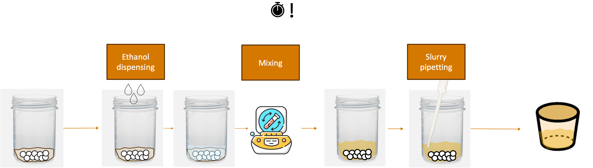

Best Practices#
To ease the deployment of AlabOS, below are several example solutions to common problems or challenges found during implementation:
1. Minimizing duration for time-sensitive samples#
Solution: To ensure the time-sensitive samples are processed with minimum duration, one can first reserve all devices
before running the first process that starts the timer for the sample.
Example system:#
Take this scenario for solid_wet_mixing_and_pipetting task. The objective is to mix solids with ethanol and pipette
the slurry into another container. The sample starts as unmixed solids dispensed inside a polypropylene mixing pot with
pressence of zirconia balls (to transfer energy during mixing) and ends as slurry inside an alumina crucible container
as illustrated in the figure below.

For this process, the timer starts when the first ethanol drop hits the solid mix. The challenge present in this system
is that the solid mix can densify if given enough time under ethanol pressence. Therefore, the series of
process ethanol_dispensing, mixing, and slurry_pipetting have to be done as fast as possible for each sample. To
do this, one have to ensure that all device are always available for the sample whenever the sample needs it.
Solution implementation for the system:#
class Solid_Wet_Mixing_and_Pipetting(BaseTask):
def __init__(
self,
ethanol_amount: float = 5000, # in ul, 5 mL by default
mixing_duration: float = 600, # in seconds, 10 minutes by default
*args,
**kwargs,
):
priority = kwargs.pop("priority", TaskPriority.HIGH)
super().__init__(priority=priority, *args, **kwargs)
self.ethanol_amount = ethanol_amount
self.mixing_duration = mixing_duration
def run():
sample = self.samples[0]
with self.lab_view.request_resources({
IndexingQuadrant: {"crucible/slot": 1},
EthanolDispenser: {},
Mixer: {},
SlurryPipette: {},
RobotArm: {},
None: {
"slurry_transfer_crucible_position": 1
}
}) as (
devices,
sample_positions,
):
indexing_quadrant: IndexingQuadrant = devices[IndexingQuadrant]
ethanol_dispenser: EthanolDispenser = devices[EthanolDispenser]
mixer: Mixer = devices[Mixer]
slurry_pipette: SlurryPipette = devices[SlurryPipette]
robot_arm: RobotArm = devices[RobotArm]
initial_position = self.lab_view.get_sample(sample=self.sample).position
destination = list(sample_positions[EthanolDispenser]["slot"])[0]
robot_arm.move(sample, destination)
ethanol_dispenser.dispense(self.ethanol_amount)
destination = list(sample_positions[Mixer]["slot"])[0]
robot_arm.move(sample, destination)
mixer.mix(self.mixing_duration)
destination = list(sample_positions[SlurryPipette]["slot"])[0]
robot_arm.move(sample, destination)
slurry_pipette.transfer(self.ethanol_amount)
# move back empty mixing pot to rack
destination = initial_position
robot_arm.move(sample, destination)
# consider sample to be only in the crucible now
self.lab_view.move_sample(
sample=sample,
position=positions[None]["powdertransfer_crucible_position"][0],
)
destination = list(sample_positions[IndexingQuadrant]["crucible/slot"])[0]
robot_arm.move(sample, destination)
In this solution, before running any of the time-sensitive process, all the devices and sample positions involved in the process is booked. Then, the robot begins the series of processes until it finishes everything, ensuring minimum time is achieved for this specific sample. The next sample will run once this specific sample is done. Note that all resources are available because the booking ensures the devices and sample positions are exclusively available for this task.
3. Cancelling samples and removing them out of the automated workflow gracefully#
Note
More content will be added soon.